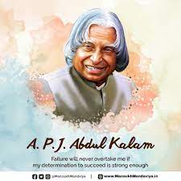

Dr.APJ Abdul Kalam
Apj Abdul Kalam
Born:October 15, 1931- Died:July 27, 2015
Information
A.P.J. Abdul Kalam (born October 15, 1931, Rameswaram, India—died July 27, 2015, Shillong) Indian scientist and politician who played a leading role in the development of India’s missile and nuclear weapons programs. He was president of India from 2002 to 2007. Kalam earned a degree in aeronautical engineering from the Madras Institute of Technology and in 1958 joined the Defence Research and Development Organisation (DRDO). In 1969 he moved to the Indian Space Research Organisation, where he was project director of the SLV-III, the first satellite launch vehicle that was both designed and produced in India. Rejoining DRDO in 1982, Kalam planned the program that produced a number of successful missiles, which helped earn him the nickname “Missile Man.” Among those successes was Agni, India’s first intermediate-range ballistic missile, which incorporated aspects of the SLV-III and was launched in 1989. Dr APJ Abdul Kalam was an Indian aeronautical scientist who served as the country’s 11th president from 2002 to 2007. He was born and raised in the city of Rameswaram in Tamil Nadu, where he went on to study physics and aerospace engineering. Avul Pakir Jainulabdeen Abdul Kalam was born on October 15, 1931, in Rameswaram, on Pamban Island, then in the Madras Presidency, now in Tamil Nadu. Kalam was the youngest of five siblings. His ancestors had been affluent traders and landlords, owning enormous property holdings. Kalam’s family was impoverished in his early youth. Apart from the ancestral home, the family fortune and assets were lost with the building of the Pamban Bridge. The family came to be known as “Mara Kalam Iyakkivar” (later on reduced to “Marakier”), meaning wooden boat steerers, as the main family business was ferrying pilgrims. Kalam sold newspapers to support his family financially.
Achivements
Abdul Kalam is one of the finest leaders of this country. He is admired for his achievements and led a very successful life. His way of living and his vision will continue to inspire people. Below is the list that tries to do honour to his countless achievements:
- In 1960, Dr Kalam joined the Defence Research and Development Organisation (DRDO) (DRDO) after he finished his graduation from the Madras Institute of Technology.
- In DRDO, Kalam was responsible for designing helicopters for the Indian Army.
- Dr Kalam was selected as the project director for SLV-III, India’s first indigenous satellite launch vehicle, after he joined the Indian Space Research Organisation (ISRO).
- Dr Kalam was appointed as a guest lecturer at the University of Delhi, after completion of his term as President.
- He was awarded by "BharatRatna".